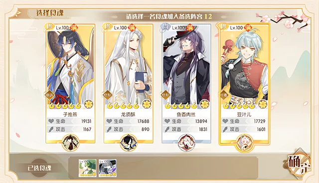
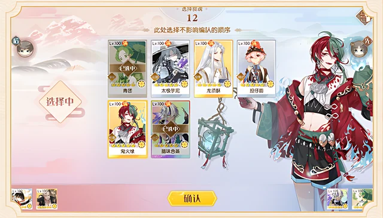
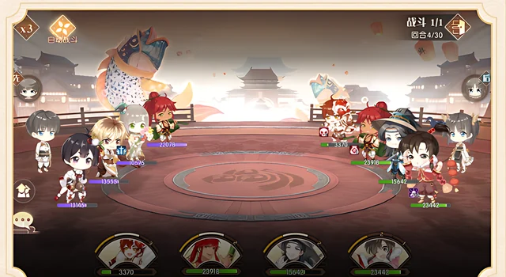
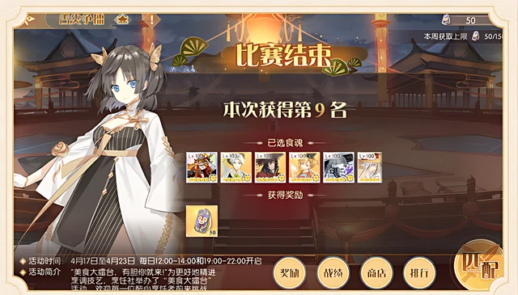

A 32-player knockout tournament inside a character-collection RPG, built on one rule: your own collection does not come in with you. Every roster is drafted at the start, so matches are decided by choices, not by account strength.
In a character-collection RPG, a player-versus-player mode mostly shows which account is stronger.
The competitive rules, pairing rules and roster rules for a 32-player draft tournament where every character is supplied by the system.
Shipped as a limited-time mode in April 2023.
Players in a card RPG build their characters over months. If those accounts go straight into a player-versus-player mode, the result mostly shows who has played longer or spent more.
A tournament is worth entering only if either player could win. So the goal was a mode where a new player and a long-time collector start with the same chances, and where skill still matters.
The mode opens in two daily windows, 12:00–14:00 and 19:00–22:00. Players are matched at random into a room, and the tournament starts the moment the room holds 32.
Six picks. Each pick offers four random characters; the player keeps one.
Paired with another player in the room, each side chooses four from its reserve.
Units act in speed order. Both sides are locked to auto-battle until one wins.
The loser leaves with a placement reward. The winner drafts one more character and faces another winner.
The arena supplies every character and its gear.
Built pick by pick from random offers.
Chosen again for each match.
"No pay-to-win" is easy to say and easy to break. Here it follows directly from how rosters, matches and pairings are defined.
Every character in the mode, and the gear it carries, is supplied by the arena. The stats used in a match have no link to what the player has collected or leveled up outside the mode. Two players facing each other differ only in what they drafted and what they chose to field.
With combat locked to auto-battle for both sides, everything a player controls happens before the first turn: which six to draft from random offers, and which four of them to send out this match. Removing manual control could have left nothing to be good at, so the draft and the lineup choice had to provide the depth.
Thirty-one matches have to finish for a room to produce a champion, and one match that never ends would hold up every remaining player. Matches are capped at 30 rounds; if no one has won by then, the side with more total health remaining wins. With that rule, the bracket always finishes.
A winner drafts one more character and is paired with another player on the same number of wins. The reward for advancing is a larger reserve, not a stat bonus: more ways to build a lineup of four against the next opponent. The loser exits with a placement, so every player leaves the room with a result.
Together, the four rules mean one thing: the only thing a player brings into the arena is their own judgment.

Four characters offered, one to keep. The stats on each card come from the arena, not from the player's account.

Choosing four from the reserve before a match. This is the main decision in every match.

Four against four on auto-battle, with the round counter at 4 of 30.

Eliminated: the screen shows the final placement, the drafted roster, and the reward for that placement.
Screens from the game's official rules announcement for the mode.